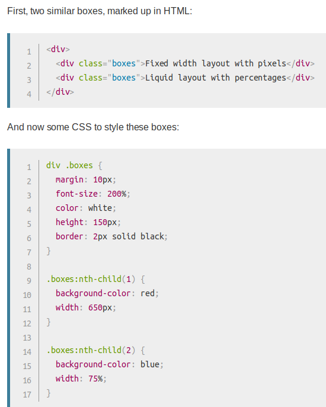
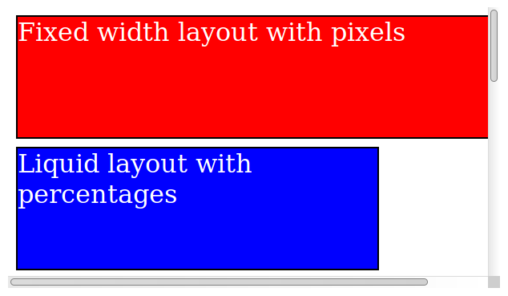
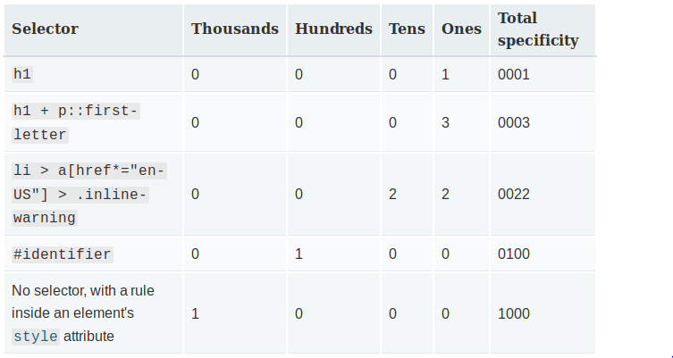

How CSS Works
What is CSS?
CSS is a language for specifying how a page page is presented.
A CSS document is usually a text file consisting of:
- Properties: Attributes that have values that define how something looks, e.g. this font should be blue and size 12
or this element should be 50% the width of the parent and aligned to the right.
- Selector: The selection of which elemnts the properties above should be assigned to. e.g. this should apply to
all headers, or just certain paragraphs in my document.
How does CSS work?
When the browser displays a document, it first combines all content from both the HTML and CSS documents into a
Document Object Model or 'DOM'. The browser then displays the contents of the DOM.
(Visual Example)
A DOM has a tree structure, where each element, attribute and text becomes a
DOM Node.
DOM Nodes have a parent/child relationship. Some elements are parents of 'child nodes', child nodes can hace 'sibling nodes'.
As an example:

...would be represented as:

...where the <p> element is the parent DOM node of the text and
<span> elements. The <span> elements are DOM note siblings along with the text, and the
<span> elements are also parent DOM nodes
of other text that are siblings.
Applying CSS to HTML
An external stylesheet is usually a text file with a .css extension,
referenced in a HTML file using the <link> element
in the HTML header. Usually something like:
<link rel="stylesheet" href="style.css">.
It is also possible for an internal stylesheet within the HTML file. Try to avoid this, but if required the CSS elements and properties
would be contained within the <style> element contained within the html header.
Again, try to avoid, but it is also possible for inline styles that are contained within a "style" attribute within the element.
This affects the one element only, and looks like:
<h1 style="color:blue; border:solid black;">.
CSS Syntax
Vocabulary
CSS consists of two key elements:
- Properties: Indentifiers which indicate the feature which
is being styled.
- Values: Each propery is given a value which indicates the
style of the property.
A propery and value combined is called a CSS Declaration, which is
contained within CSS Declaration Blocks.
A CSS declaration syntax is the propery, followed by a colon, followed by
the value(s) of that propery, followed by semi-colon. For example:
background-color:red;.
Each CSS declaration is contained within a declaration block. Multiple declarations
can be contrained within a block. A block is contained within
{ }.
A CSS block is then assigned to a selector, or group of selectors. A standalone
selector refers to an element, e.g. p for paragraph.
A selector with a fullstop refers to a class, e.g. .code.
A selector with an octothorpe refers to an ID, e.g. #section5a.
A few other CSS statements to be aware of are:
- At Rules:Used to convey metadata. For example,
@import: 'custom.css'.
- Nested Statements:A subset of an at-rule. For example,
@media (min-width: 800px) { }.
In this case,
the statement only applies when the nested rule is met.
Comments can be added to CSS using /* to start
and */ to end.
Some properties can be shorthand. For example, padding:
10px 15px 15px 5px is the same as:
padding-top: 10px
padding-right: 15px
padding-bottom: 15px
padding-left: 5px
...where the process is top, right, bottom, left. Remember: North, East,
South, West.
CSS Selectors
There are 6 key types of selector:
- Simple Selectors
- Attribute Selectors
- Pseudo-Classes
- Pseudo-Elements
- Combinators
- Multiple Selectors
Simple Selectors
The simple selectors include:
Element selector: Applies to an element such as
p for the paragraph element.
Class selector: Applies to all elements where a html
class attribute is in use.
ID selector: Applies to a single element that has a unique
ID attribute assigned.
Universal selector: Applies to everything. Not used often.
Presence and Value Attribute Selectors
Attribute selectors match elements based on specific attributes and
the attribute values. The selector is housed within square brackets
[ ], which contains the attribute name and optional
condition to match. For example:
- [attr] is a selector acting on all elements with
the attr attribute.
- [attr=val] is a selector acting on all elements with
the attr attribute where the attribute value is
equal to val.
- [attr~=val] is a selector like the one above,
but acting on one of a space-separated list of words contained in
[attr]'s value.
- [attr^=val] is a selector which will select all
elements with attribute attr that starts with val.
- [attr$=val] is a selector which will select all
elements with attribute attr that ends with val.
- [attr*=val] is a selector which will select all
elements with attribute attr that contains
substring val.
Pseudo-Classes
A pseduo-class is a keyword added to the end of a selector. This is to signify
that the style should only apply to the element when the element is in a certain
state. For example, only styling an element if mouseovered, or a check box when
enabled or disabled. The pseudo-class keyword is preceded with a
:. There is a set list available online.
For example: a:hover selector would apply the style when
the a link is hovered over.
Pseudo-Elements
Pseudo-elements are like pseudo-classes, but with key differences. They can be
added to the end of selectors to select a certain part of the element. They are
keywords frocessed with ::. For example, you could apply
the following pseudo-element on the href element to say
add an arrow after the http: [href^=http]::after { }.
Combinators
CSS electors can be combined in various ways.
- Selector List: Simply a list of selectors such as
A, B.
- Descendant Combinator: Two elements are listed, where any situations
where the second is a descendent of the first (e.g. child, grandchild etc.) For
example: A B
- Child Combinator: Like a descendard combinator, but only when the
second elemend is a direct child of the first: A > B.
- Adjacent Sibling Combinator: The next element that is a sibling of another
element and shares the same parent: A + B.
- General Simbling Combinator: Similar to above, but applies not just
to the next one: A ~ B.
CSS Values and Units
Numeric Values
In most cases, sizes for things such as border and
margin are done in pixels or px.
It's also possible to put sizes as quarter mm, mm, cm or inches (q,
mm, cm,
in) but these are rarely used.
Pixels are absolute units as they'll always be the same. There are also
relevate units available to use, which are reletive to the current elements
font-size or 'viewport' size. Including:
- em:1em is the same as the font size of the current
element. The default font size given to web pages before CSS styling kicks in
is 16 pixes, so 1em is 16 pixels.
- ex, ch. Not used
often. Respectively, these are the height of a lower case 'x' and the width of
the number 0.
- rem is the 'root em'
and works in the same way as em except it will always
equal the default base font size instead of inherited font sizes.
- vw, vh. Respectively these
are 1/100th of the viewport width and 1/100th of the viewport hight. Not as widely
used as em.
...so px and em is the way
forward, but it's recommended that em is good to use as
its relative to the font size.
Some values are unitless. For example, using just 0
can be used instead of 0em, or for something like
line-height the value can be just 1.5 without a unit
to specify a 1.5 line height based on the default font size.
Percentages
Percentages can also be used to represent numeric values. This allows boxes to
always resize by a certain percentage of their parent containers width. Typically,
compared to the parents px or em
sizewhich says the same.
As an example of parent-child relationships, and percentages:

...results in the following:

Colors
CSS has the standard color range available of about 16.7m colors, all a combination of different
red, green and blue options with 256 per option. There are a variety of ways to assign a color in
CSS.
keywords
The simplest option is to use color keywords which are simply specific strings. There are 165
keywords available, and all are available to view
here.
Hexadecimal Values
Hex codes consist of a octothorpe followed by 6 hexadecimal numbers. A hexadecimal number takes
a value of 0 to f, so 0123456789abcdef, where a to f represent numbers 10 to 15. Each pair or the
6 numbers represends one of the 3 RGB options from 0 to 256, of 00 to ff. For example,
#ff0000 is equivelent to 256, 0, 0, or solid red, where 256 comes from
f x f, or 16 x 16. Or #0000ff is equivelent to 0, 0, 256, or solid blue,
and so on.
Any color can be represented using hex codes, although it's not too clear to understand easily.
RGB
RGB works very much the same as hex codes, but is represented differently using
rgb(,,). For example, rgb(255,0,0) would
be red, or rgb(0,0,255) would be blue.
RGB is generally just as well supported as hexadecimals, and is easier to view.
HSL
HSL, or Hue, Saturation and Lightness, is a diffent way of distibushing between the 16.7m
colours. The syntax is hsl(,,), where instead of up to 255 for the numbers
after for red, blue and green, you enter:
- hue: is the base shade of colour, with a value between 0 and 360 taken from a color wheel.
- saturation: is how saturated is the color, from 0% for no saturation (appears as a shade of
grey) to 100% for full saturation.
- lightness: is how bright is the color, with a value between 0% for no light (appears as
black) to 100% for full light (appears as white).
RGBA and HSLA
RGB and HSL have corresponding modes, RGBA and HSLA, where A represents the transparancy of the
colour. The transaparancy, or 'alpha value', is a decimal value ranging from 0 to 1 where 0 is
completely transparant and 1 is completely opaque. Note that this only sets the color as transparant;
to make a full selector transparant, use the opacity property.
Functions
A function is a reusable section of code. Functions in CSS are property values that are followed
by parenthesis, such as rgb() or hsl().
Other functions include things like rotate(), translate(),
calc() and url().
Cascade and Inheritance
Previously selectors have been covered. Sometimes there may be a situation where more than one CSS
rule applies to an element, so which CSS rule wins? This is controled by a mechanism called
cascade and is related to inhertance from parents too.
The Cascade
CSS stands for Cascading Style Sheets, so the cascade is important. There are three factors
which determine the CSS rule that applies to an element and which get overwritten:
- Importance
- Specificity
- Source Order
Importance
Importance froms from a special syntax command !important which always
wins and overrides other rules. For exmaple, background-color: red !important would
override any other background-color rule.
The !important rule can only be overwritten by either another
!important declaration of the same specificity but later on in the source
order, or by an !important declaration with a higher specificity.
Specificity
This is essentially a measure of how specific the selector is. Element selectors have low specificity
as it could apply many times. Class selectors have a higher specificity as classes are more specific
than general element selectors. ID selectors have even higher specificity as IDs are even more specific
than class selectors.
Specificity is measurable using 4 digits:
- Thousands: Score on in this column if the declaration is inside a style
attribute, i.e. a direct inline style in the html code.
- Hundreds: Score one in this column for each ID selector contained in the ovrall selector.
- Tens:Score one in this column for each class selector, attribute seletor or pseduo-class
contained within the overall selector.
- Ones: Score one in this column for each element selector or pseudo-element contained within
the overall selector.
The greatest total specificity value would 'win'. As an example:

Source Order
After importance and specificify, the next factor that kicks in for competing selectors of the
same importance and specificify is source order. Later rules always override earlier rules.
Inheritance
In CSS, some propery values applied to an element get inherited by the elements children,
and others won't. For exaple, properties such as font-family and
color properties are good to be inherited, as they can be set against
the <html> element and then apply to everything withing, unless
overwritten by individual rules. Properties such as margin,
padding and border should not be inherited,
as those are set at container element level and child elements are typically different.
Generally, its common sense as to whether inhertance applies, but for each property type see more
details here.
Inheritance can also be specified using the following four universal propery families:
- inherit: Sets the property value to an element to be the same
as its parent element.
- initial: Sets the property valur to be the same as the browsers default
style sheet. If no default applies, inherit kicks in.
- unset: Resets the proporty to its natural value.
- revert: Reverts the property to that it would have been if no styles
had been applied to it.
For example, color: green set at parent level, could be picked up at child
element level using color: inherit.
The Box Model
The CSS box model is the foundation of web page layout. Each element is represent as a rectangular box,
where the box needs specific properies defining.
Box Properties
{kind=link}